As the file extension implies, React.js is Javascript. More specifically, React is a Javascript library that is tailored to creating user interfaces. The documentation for React can be found here.
Installing React Developer Tools
To easily view and debug our React code, we'll use the React Developer Tools extension. This will add a component in the browser's developer tools. The following instructions are for Chrome but can easily be used for other browsers.
Download the React Developer Tools extension from the Chrome web store here.
To check that its working, go to a webpage that has React built in, open the browser's developer tools and in the console type: window.react={};. If its installed, you'll see a "Components" tab with the React logo appear in the tool ribbon.
Creating a Project
To create a React app, we'll use the Create React App, which will help us generate a base project structure. To use Create React App, we'll first need Node and NPM: www.nodejs.org. Once you've installed Node, check to make sure its at least version 8 or higher by going into Git Bash and typing in node --v. We can now create a project.
Navigate to wherever you want the project folder to be set up
Type in npx create-react-app <folder-name> and the app will start building our React project. Note: it will also create a local Git repository too!
Enter cd <folder-name> to navigate to our newly created project.
Enter npm start to load the project using a local server into a browser window.
In our project folder, we'll see that the app generated alot of files and folders for us.
The src folder contains all the css and js files and will be where most of our work will be done.
The public folder is where the html as well as images are stored.
The package.json file contains all the dependencies of our project (all the version numbers of the React components)
Creating Elements
In the src folder, you'll notice a file called index.js If you open it up, you'll see a bunch of imports as well as a ReactDOM.render() function.
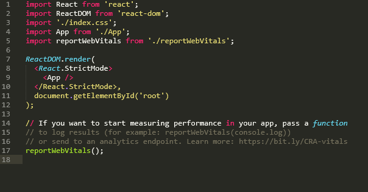
This function is what we'll be using to create elements and putting them onto the webpage. The first argument for this function is the element that we want to create. The second argument specifies where we'll inject the element we've created. In the base project, this is already set up as document.getElementById('root'). We'll start by creating an element using the React.createElement() function.
Creates a DOM object using React. The first paramater specifies the element type. The second parameter specifies the element's properties, in a comma-separated list. The third parameter specifies any child nodes for the element ex. text or other elements.
As an example, we'll create an H1 element, keeping only its default properties and have it say "Hello World"
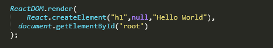
And when we reload our project in the browser...
Creating Elements with JSX
Creating elements with the createElement() function is fine for one or two elements but what if we want to add a big block of nested elements like a list? It would be alot of work, not to mention prone to errors, if we just kept nesting a bunch of createElement() functions. Thankfully, JSX or Javascript as XML, allows us to write HTML tags directly into React!
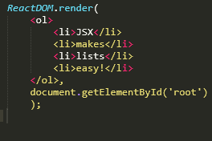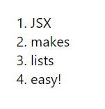
React Components
Components are basically functions; each component is its own separate block of code that returns HTML.
In the src folder, there's already a component file called app.js. Let's take a look.
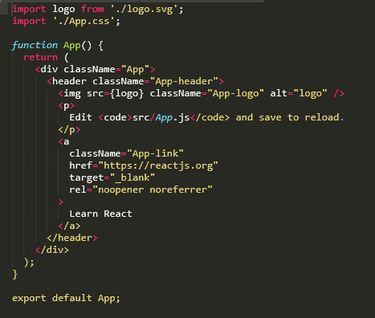
This file contains a function called App() that is designed to return a bunch of JSX. If you notice on the bottom, there's an export statement; this means that to use this module, we'll need to import it. If we go back to our index.js file, you'll notice that there's an import statement already:
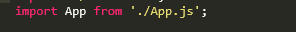
Now if we got to our render() function, we can use our component by declaring it like an HTML element
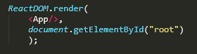
Now when we refresh, we see that our component will be rendered on the page
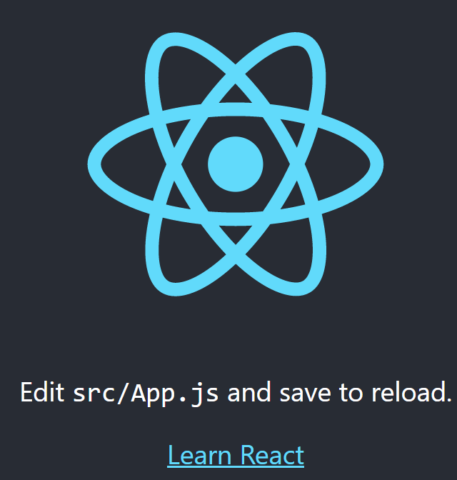
Some key things to know about creating components:
Component names must begin with a capital. Otherwise it won't render properly.
The content of each of your components should be enclosed in some sort of container element like <header>, <div<>. This is ensure that they're kept separate from the contents of other components
Nested Components
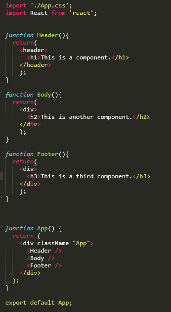
In the above example, we defined three different components: Header, Body, and Footer. We then shoved them all into our App component, which is currently being rendered. When we refresh our page, we see all three components rendered at once.
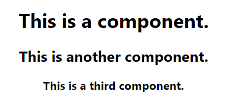
Component Properties
Components can be loaded with properties which can allow you to customize their returns. Suppose we have a component that returns "My name is Jacky".
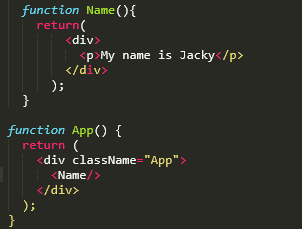
What if we wanted it to print out a different name? We could go into the component and change it in there but for a larger component where we have to change multiple values in different places, that might not work as well. Instead, lets give our Name() component a 'name' property.
To define properties, you go to whereever the component is being referenced (in this case, the App() component) and write it just like any HTML property. In this case, lets create a 'name' property and set it to "Michelle".
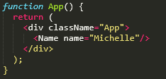
Now that our component has a property, how to we use it? Well, every component has access to a resource called props(short for properties), which is where our properties our stored. So we'll need to pass the props to our component, and then call our property using the format {props.propertyName}.
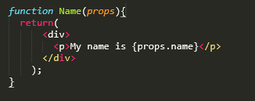
Now our webpage has a customizable output that is configurable in a centralized location
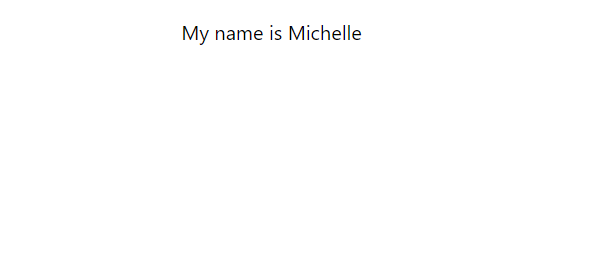
Keep in mind: props aren't just for storing static strings and numbers. You can declare properties with the outputs of other functions as well. Just remember that if the value is a variable or a function, you need to enclose it with {}.
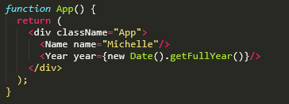
Lists as Properties
If you're working with alot of data, props can hold lists as well. Suppose Michelle wanted to display a list of her courses. First, we'll make the list.
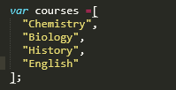
Now that the list is created, we'll add it to our props.
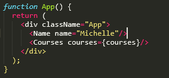
Our component will then take the list and iterate through it, generating an li for each course
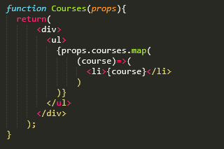
Now Michelle's course list is displayed on the webpage. If we wanted to add or change anything in the list, all we'd need to do is edit the original list we made in JS and the page will be updated automatically without us messing with the HTML. (You can change how the list looks in CSS).
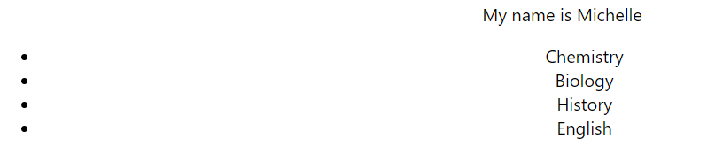
There's one last thing to do: assign IDs to each of the list items. If you look at the console now, you'll notice that its throwing a warning. This is because without IDs, things could go wrong if the list was changed after rendering. An easy way to do so is to map each of the list elements as an object with an ID.
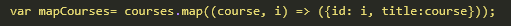
Now we just update our props to hold the newly mapped list of objects and then point the key for each li to each object's ID.
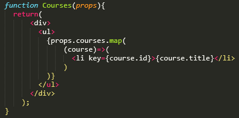
Conditional Rendering
Another way we can use properties is to control what is being rendered onto the page. This is known as conditional rendering. To do so, we assign our condition as a property to our App call in our Render() function. For example, we'll create a property called "visible" and give it the value of true.
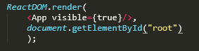
Now we can use this property by passing props to our App component.
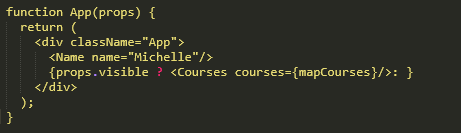
Here we use a ternary operator that uses our conditional property to decide whether or not Michelle's course list should be rendered onto the page.
Adding Images
Adding images in React is pretty straightforward.
First, import the image from whever it is stored.
import imageVarName from "./URL" React grabs that image then stores it under the specified variable name so we can call it wherever we want.
Place the image in your desired component(s) using <img> tags, just like HTML. Instead of a URL for the src all we need to do is put in the variable name we set up earlier. <img src={imageVarName} alt="...">
Fragments
When we use the render() function to display our components, it only lets us render one component at a time. If we want to render sibling components or elements, React forces us to enclose them in a container element; that's why we have all these divs holding our code. To keep things neater, React provides a way to contain our related components without having to use so much divs: Fragments.
<>...</>
React Fragments. Can be used in place of div in order to contain sibling components/elements for simultaneous rendering.
States
States are a form of conditional rendering allow us to control what is output onto the screen. One of the advantages of states is that we don't need to set up properties for each configuration. As an added bonus, we don't have to do anything in the index file which helps keeps our rendering and our scripting separate.
Here's how to set-up states in your React app:
Import the useState function from the React library.
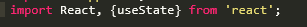
The useState function creates an array that consists of two elements. The first element is a variable that holds the current state of the React app. The second hold a function that we'll use to change the state i.e. change the value of the state variable. We initiate the state by calling the the useState function, thus creating a state variable and the state-changing function. At the same time, we destructure the array, which allows us to assign variable names to each of those elements. By passing in an argument into the useState function, we also set the initial state value.
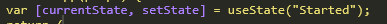
We can now use the function we named to change the state of the app. Note that you can't call the function on its own, it'll generate an indefinite loop. You can however package the function with another aspect like a button.
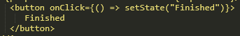
Effects
Effects are another hook in React, along with states. Effects are used for secondary outputs that aren't part of your components: console logs, data loading, etc.
Here's how to use effects
Import the useEffect function.
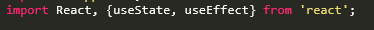
We can now use the useEffect function to output to console.
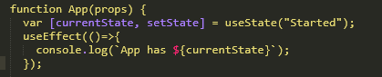
The useEffect function can take a second argument called a dependency array. This array keeps track of any variables you put in as elements and outputs a console log if those variables ever change. If this second argument is left blank, then a console log gets output on every state change. If an empty array is used, then the console log only gets output once. If a dependency is added to the array, then an console log is output every time that specific variable changes.
Fetching Data with useEffects and useStates
We can use the fetch() function in combination with our useEffect() to retrieve some data from an API. As an example, lets retrieve my account data from the Github API.
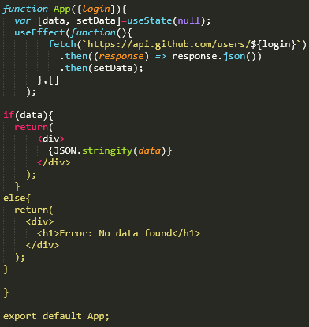
First, we use useState() to generate a state variable called data and a function for setting the value called setData. We set the initial value of data to be null for reasons explained later. Next, we'll use the useEffect() to call an anonymous function. The anonymous function will fetch from the Github api URL, then convert that data into a json format. Finally, the function then calls setData which associates the data to the data variable.
Now, if data is still null, that means our fetch didn't work so we'll render the message "No data found". Otherwise, we 'stringify' the .json data and output that instead.
Handling Loading and Errors with useEffects and useStates
When we're fetching data, it's also important to keep track of all the different states like when the data is being loaded, when it's finished loading, and if any errors occur.
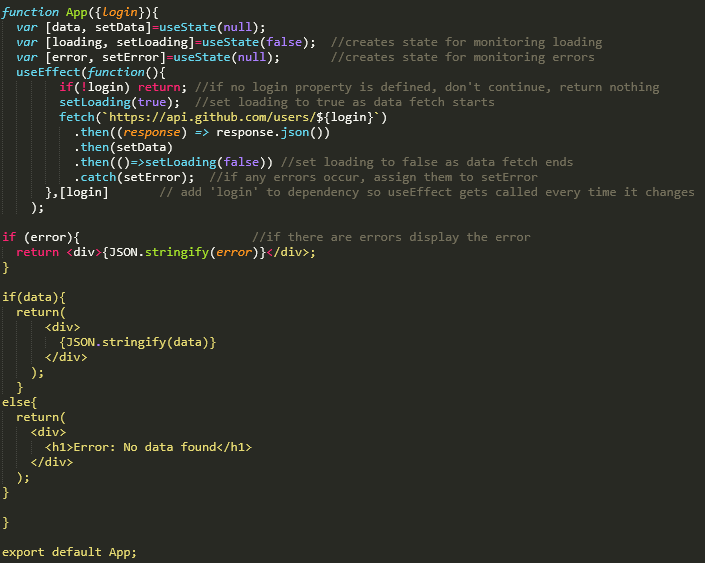
We use useState() to add states for loading and errors, initiating the load state as false (because we're not loading anything right now) and the errors to null (cause there's no errors yet). When we start the fetch, we first check to see if there's any value for the login property; if there isn't then we immediately exit out of the useEffect() block. If there is, then we set loading to true and start the fetch. Once the data has been retrieved and stored into data, we set lading to false. We also add a .catch at the end to handle any errors that may have occured during the fetch.
Reducers
Reducers are similar to states in that it allows to define an initial state as well as generate a function for changing that state. The difference is that reducers allow you to define the function as well.
Import the useReducer function from the React library
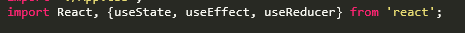
The useReducer function takes two arguments. The first is the function, the second is the initial state. Be aware when destructuring the useReducer array: the arguments are function then initial state but the array values are placed initial state, then function.
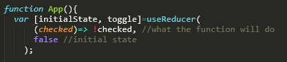
The compactness of reducers makes them useful for managing things like checkboxes and other input forms
React Routers
As mentioned earlier, a React app is composed of a single web page whose content is loaded dynamically. If our app needs to have multiple pages, we just load in some new content on the same page to replace the old one. But how does React know which content to load? That's where routing comes in. First we'll need to install the React router so type theses in your command line: npm install react-router@next react-router-dom@next npm install history.
Then in our index.js, we import the BrowserRouter.
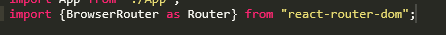
Next, we give our App access to the router properties by surrounding it with special Router tags in our render call.
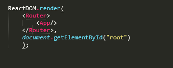
Now, let's create our additional pages. I've created a new file called pages.js and defined three components: Home, About, and Contacts. Don't forget to import React!
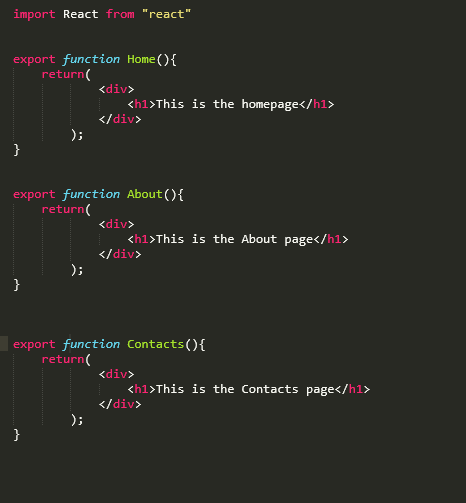
Now in our App.js file, we can start setting up the routes. First we import Routes and Route, as well as the components that we just created.
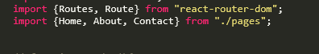
Then, we create the routes. We use the <Routes> element with a bunch of nested <Route> elements, one for each page. TIP: f you want to make a route for displaying an error if the user tries to go to a path that doesn't exist, just create a route and set the path to * along with your custom error element.
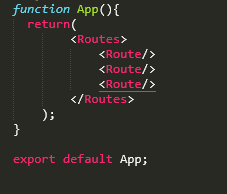
We then give each route a path and the element (component) it will display
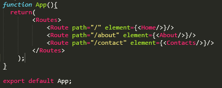
Now when we load our webpage, we'll see different things by just changing the path.
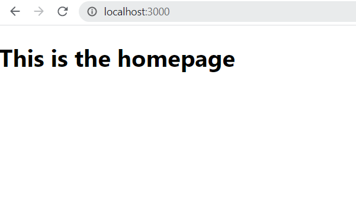
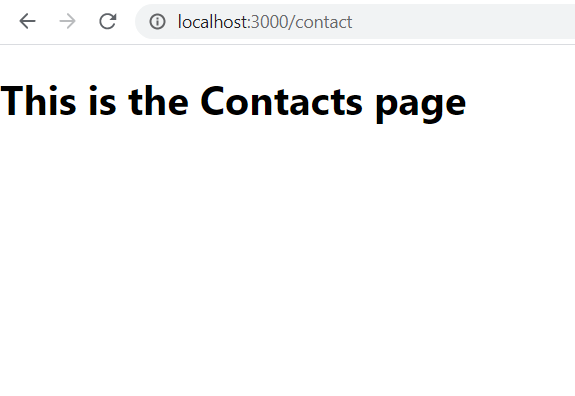
Time to add links for our users to easily change views. Back in our pages.js file, we'll import the Link component and then use that component to generate our links. This component works pretty much the same as anchors in HTML. Instead of an href property though, it uses a to property to point to the target page.
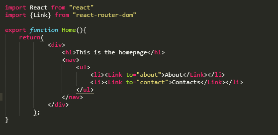
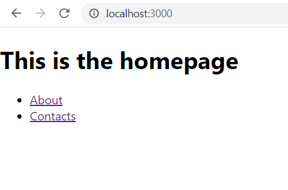
Testing with React
One feature of the CreateReact App is its ability to easily run tests. These are important to make sure all our code works as expected before deployment. We can test for pretty much anything; function outputs, render outputs, etc. All we need to do is create .test files and by running npm test in the console, it will automatically run any test() we put in those files.
test("testName", ()=>{..test setup..});
Generates a test that will be run when we call npm test. The first argument is the name of test. The second argument holds the actual test. Its common to put in a callback function as the second argument (as shown above) so that we can write the test as a function. The test must include an expect() function so that the test knows how to decide whether or not the test passes or fails.
expect(object to be checked)
For things to work, we expect it to perform a certain way. Given an input, we expect a working function to produce a specific output. Given some HTML, we expect a specific thing to be rendered on the screen. The expect() function helps us test objects by returning whether or not the object meets a certain condition. The expect() function has access to a bunch of methods which will help us create our condition to be tested. For example: expect(x).toBe(y); returns a boolean based on whether x has the same value as y. A full list of methods can be found here.
Testing Functions
Suppose we've written a function called timesTwo(), which multiplies its input by two..
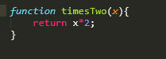
We want to test it to make sure it actually works. First we'll create a file to keep all our tests in: functions.test.js. Then in this file, we'll import our function in so we can test it.
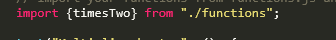
Remember that things need to be exported before they can be imported, so we'll go back and export our function by adding the export keyword.
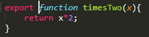
Now we can write the tests!
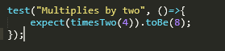
Remember to use npm test in the command line to run the tests.
Testing Renders
Suppose we have the following App().
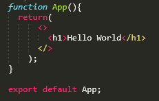
We want to make sure our render has an output of "Hello World" as an H1. So lets write a test. We'll create a file called App.test.js to hold all our render tests. We'll also need to import the render() function from the React testing library as well as the App itself.
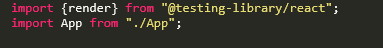
Now for our test.
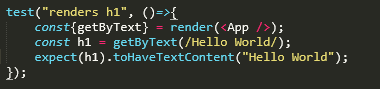
We use the render function to render our app object and destructure the object into the query getByText. Then we call the getByText function to retrieve the node containing "Hello World" using a regular expression. We finish off with our expect() line. More about queries here.